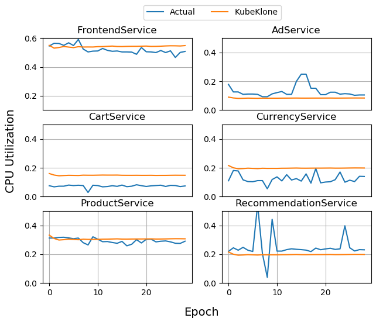
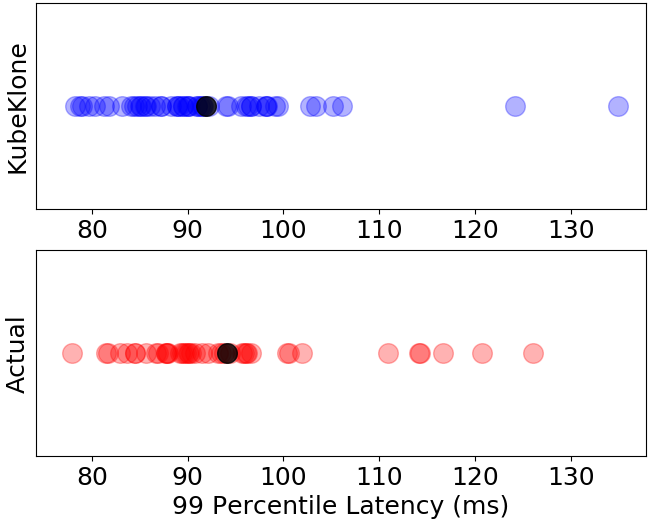

KubeKlone is a queueing based simulator to model the dynamic nature of edge and cloud microservice graphs through the implementation of 8 tunning knobs to update the microservices on the fly to simulate run-time configuration container updates in service graphs. It also incorporates 8 extended service-level state-space metrics to enable observability of microservices which allows various learning algorithm to optimize on a diverse set of metrics.

KubeKlone has a ML playground which could be used to deploy updates to microservice instances. It includes multiple control algorithms e.g., random (R), bayesian optimization (BO), reinforcement learning (RL) which can be used out of the box to achieve different optimization goals. It can faithfully reproduce similar service level behaviour. KubeKlone has a mean error of .01 - .07 in CPU Utilization across different services.

KubeKlone can accurately reproduce latency distribution of complex microservice graphs with a ks-test value of .132.